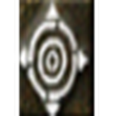
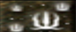
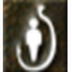

군주 스킬
| 이미지 | 스킬명 | 소모 | 설명 | 획득 방법 |
|---|---|---|---|---|
| 쇼크 스턴 | MP : 20 | 순간적인 대미지와 함께 상대를 모든 행동이 불가능한 스턴 상태 로 만듦 (2칸턴). | 중급 마법상인 | |
 | 트루 타겟 | MP : 1 | 사일런스 상태에서도 사용 가능. 대상 또는 지점을 혈맹원 화면에 강조 표시 . 강조된 PC는 혈맹/파티원에게 더 큰 대미지를 입음. ※ NPC에는 효과 없음. | 하급 마법상인 |
| 글로잉 웨폰 | MP : 25 | 술자에게 근거리 명중 +5 , 추가 타격 대미지 +5 부여. | 하급 마법상인 | |
 | 샤이닝 실드 | MP : 25 | 사용 시 640초간 AC -8 효과 부여. | 하급 마법상인 |
 | 콜 클랜 | MP : 30 | 지정한 혈맹원 1명을 자신 위치로 소환 . ※ 특정 지역/공성 지역에서는 사용 불가. | 하급 마법상인 |
| 브레이브 멘탈 | MP : 25 | 지속 시간 동안 일정 확률로 1.5배 대미지 발생. | 드랍 |